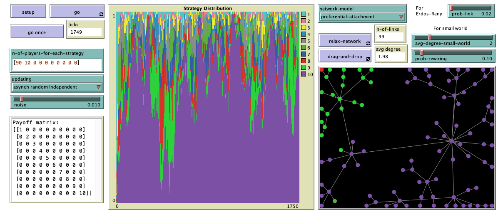

nBEPA1 in Single-optimum Coordination Games played in networks
Luis R. Izquierdo & Segismundo S. Izquierdo
HOW TO INSTALL THE MODEL
To use nBEPA1-SOCG-nw (protocol noisy Best Experienced Payoff, test All, 1 trial, in Single Optimum Coordination Games played in networks), you will have to install NetLogo 6.2.1 (free and open source) and download the model itself. Unzip the downloaded file and click on nbepa1-socg-nw.nlogo
DESCRIPTION OF THE MODEL
This section explains the formal model that nBEPA1-SOCG-nw implements. The information provided here should suffice to re-implement the same formal model in any sophisticated enough modelling platform. We use bold green italicised arial font to denote parameters (i.e. variables that can be set by the user).
Population
In the model, there is a population of \(N\) agents who are embedded in an undirected network and repeatedly play a Single-Optimum Coordination Game with their neighbors. The type of network is determined by the user setting the parameter network-model, which can have the following values: Erdos-Reny, small-world, preferential-attachment, ring, star, or grid-4-nbrs.
The Game
The Single-Optimum Coordination Game is a 2-player \(n\)-strategy game with the following payoff matrix:
\[
\left(\begin{array}{ccccc}
1&0&0&...&0\\
0&2&0&...&0\\
0&0&\ddots&&\vdots\\
\vdots&\vdots&&n-1&0\\
0&0&...&0&n\\
\end{array}
\right)
\]
Note that the optimal outcome is achieved if both players choose strategy \(n\).
The nBEPA1 revision protocol
From time to time, agents are given the opportunity to revise their strategy, and they do so following the nBEPA1 revision protocol:
- With probability noise, the revising agent chooses one of the \(n\) strategies at random.
- With probability (1-noise), the revising agent tests each of the \(n\) strategies, by playing each of them once with a neighbor in the network. Crucially, the revising agent tries each one of its strategies against a randomly drawn neighbor; thus, each trial is conducted with a potentially different neighbor. Once each of the \(n\) strategies has been tried against one (potentially different) neighbor, the revising agent chooses the strategy that provided the greatest payoff in the test, resolving the possible ties at random.
Sequence of events
Initially, agents are randomly assigned a strategy according to the initial distribution n-of-players-for-each-strategy = \(\left[a_1, a_2, ..., a_n\right]\) set by the user, where \(a_i\) denotes the number of agents using strategy \(i\). The population size \(N\) and the number of strategies \(n\) in the game are computed from the initial distribution, since \(N = \sum_i a_i\) and \(n\) is the number of elements in the initial distribution.
The model then runs in discrete time-steps called ticks. Within each tick, agents are given the opportunity to revise their strategies. The way agents are scheduled to revise their strategies is specified by the user with parameter updating, which can take three values:
- Asynchronous random independent. In every tick, we repeat the following procedure as many times as agents there are: "Take one agent at random and give it the opportunity to revise its strategy."
- Asynchronous random order. In every tick, we give all agents the opportunity to revise their strategy sequentially in a random order.
- Synchronous. In every tick, all agents revise their strategy at the same time (i.e. synchronously).
Note that, in every tick, exactly \(N\) revisions take place regardless of the value of updating. This sequence of events is repeated iteratively.
HOW TO USE IT

Parameters
- n-of-players-for-each-strategy: List of the form \(\left[a_1, a_2, ..., a_n\right]\), where \(a_i\) denotes the initial number of agents using strategy \(i\).
- updating: Updating scheme used to conduct the revisions. It can take the following three values:
- Asynchronous random independent
- Asynchronous random order
- Synchronous
The value of this parameter can be changed at runtime, with immediate effect on the run.
- noise: Probability of experimentation, i.e. probability with which a revising agent adopts a random strategy. The value of this parameter can be changed at runtime, with immediate effect on the run.
- network-model: Algorithm used to build the network. It can take the following six values:
- Erdos-Reny. The network is a random network of \(N\) agents in which each possible (undirected) link is created with probability prob-link, independently from every other link. The algorithm used is the \(G(n,p)\) variant of the Erdős-Rényi model.
- small-world. The network is a Watts-Strogatz small-world network, with average degree set with parameter avg-degree-small-world and rewiring probability set with parameter prob-rewiring.
- preferential-attachment. The network is generated using the Barabási-Albert model, with minimum degree 1.
- ring. The network is a ring network of \(N\) agents, in which each agent is connected to exactly two other agents.
- star. The network is a star network in which there is one central agent and every other agent is connected only to the central agent.
- grid-4-nbrs. Initially, the created network is a 2D lattice network (i.e., a grid) with \(\lceil\sqrt{N}\rceil\) rows and \(\lceil\sqrt{N}\rceil\) columns, and then the \(\left(\lceil\sqrt{N}\rceil\right)^2-N\) extra agents are randomly removed from the network.
- noise: Probability of experimentation, i.e. probability with which a revising agent adopts a random strategy. The value of this parameter can be changed at runtime, with immediate effect on the run.
Buttons
- setup: Sets the model up, creating a population of agents with initial strategies determined by parameter n-of-players-for-each-strategy.
- go once: Pressing this button will run the model one tick only.
- go: Pressing this button will run the model until this same button is pressed again.
- relax-network: Pressing this button will repeatedly apply a spring layout algorithm on the network, as if the agents were repelling each other and the links were springs. To stop the algorithm, press the button again. The effect is just visual and has no impact on the dynamics.
- drag-and-drop: With this button pressed, you can drag and drop any player in the network with the mouse. The effect is just visual and has no impact on the dynamics. To deactivate this functionality, press the button again.
MONITORS, TEXT BOX, PLOT AND VIEW
- ticks: Number of ticks that have gone by.
- n-of-links: Number of links in the network.
- avg degree: Average degree in the network.
- Payoff matrix: Text box showing the payoff matrix of the single-optimum coordination game being played. The game has as many strategies as elements there are in n-of-players-for-each-strategy.
- Strategy distribution: Time series of the distribution of strategies in the population.
- View: This is the black rectangle at the bottom right. It shows each player as a circle, colored according to its current strategy. Two players are neighbors if and only if there is a link that connects them.
LICENCE
nbepa1-socg-nw is a NetLogo model designed to analyze the nBEPA1 (noisy Best Experienced Payoff, test All, 1 trial) protocol in Single Optimum Coordination Games played in networks.
Copyright (C) 2021 Luis R. Izquierdo & Segismundo S. Izquierdo
This program is free software; you can redistribute it and/or modify it under the terms of the GNU General Public License as published by the Free Software Foundation; either version 3 of the License, or (at your option) any later version.
This program is distributed in the hope that it will be useful, but WITHOUT ANY WARRANTY; without even the implied warranty of MERCHANTABILITY or FITNESS FOR A PARTICULAR PURPOSE. See the GNU General Public License for more details.
You can download a copy of the GNU General Public License by clicking here; you can also get a printed copy writing to the Free Software Foundation, Inc., 51 Franklin Street, Fifth Floor, Boston, MA 02110-1301, USA.
Contact information:
Luis R. Izquierdo
University of Burgos, Spain.
e-mail: lrizquierdo@ubu.es
MODELLERS
This program has been designed and implemented by Luis R. Izquierdo & Segismundo S. Izquierdo.
REFERENCES
Izquierdo, L. R., Izquierdo, S. S. and Rodríguez, J. (2021). Decentralized, Fast and Scalable Almost-Global Convergence in Single-Optimum Coordination Problems. Working paper.